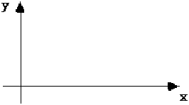

This section provides an overview of basic EDIF language concepts. This includes the levels of EDIF, the syntax and the meta-syntax used throughout the document. All concepts described in this section apply to all levels of EDIF.
An interchange format for electronic design data must meet the needs of a wide range of users - from those wishing to transfer mask artwork data in its final form, to those desiring to transfer a behavioral description of a microcomputer. A procedural format could be used to describe the mask artwork data, but the data can be expressed as effectively using simple geometric primitives.
A primary requirement of an interchange format is the unambiguous description of the data it is transmitting. Consequently, it is important that all readers and writers of the format possess exactly the same understanding of how the EDIF data is to be interpreted.
To avoid complicating the simple tasks and still provide the power of procedural descriptions for those who need them, EDIF descriptions can be specified in two different levels of complexity.
These are:
Level 0 : The basic level - only literal constants are permitted.
Level 1 : Level 0 with the addition of parameters, expressions and frames.
A form of shorthand to reduce the size of EDIF data is provided in the form of four different levels of keyword mapping or abbreviations. These are syntactic shorthands that allow users to shorten commonly used keywords or keyword structures. Four levels are provided.
These are:
k0: no abbreviations
k1: simple keyword abbreviations,
k2: non-iterative keyword definitions
k3: iterative keyword definitions
These are represented in the manual using prefixes for each level.
The meta-syntax used in the Section 2 to describe EDIF constructs obeys the following rules:
EDIF uses a Lisp-like syntax. The syntax was chosen for ease of parsing and provision of a uniform method of extension of the format. A construct begins with an opening parenthesis and a keyword. This is followed by a list of items ending with a closing parenthesis. The enclosed items may be other constructs which build a nested structure, or they may be tokens consisting of data items, such as integer tokens or string tokens, or EDIF identifiers. Delimiters may occur on either side of parentheses in EDIF constructs but are not required.
The list of legal identifiers that play the role of EDIF keywords is defined by this document. Users of the format can define their own keywords in terms of existing EDIF keywords with the k1KeywordAlias, k2KeywordDefine and k3KeywordDefine constructs. Case is not significant in keywords or identifiers.
Identifiers are used in an EDIF description to identify objects uniquely. EDIF attaches no special meaning to the choice of identifier spelling. The basic semantics of an EDIF file are not changed if one or more of the identifiers is uniformly changed for a new (and valid) identifier, both in the original definition which names an object and in all uses of the identifier to refer to that object. All structural semantics should be identical; the only change can be in the appearance of the name itself. No meaning should be assumed or expected with respect to the actual choice of names. This sharply contrasts with native EDIF keywords, whose semantic meaning is fully defined by this manual.
There are two mechanisms in EDIF to express relationships between objects: containment and name reference.
Containment is a purely lexical mechanism and relates to the textual enclosure of object descriptions within the matching parenthesis of another description (construct).
Many relationships are expressed using simple containment. A cell definition being part of a library, and a view being within a particular cluster are examples of this type. However, containment alone is only adequate to describe simple, one-dimensional structures. There are many relationships between objects in a typical CAD database which require more flexibility, such as the instantiation of one cell within another and connectivity descriptions.
The details of naming structures within EDIF descriptions are derived partially from the need to represent such relationships and partly from common identification schemes used in typical systems.
As far as possible, minimum real restrictions are placed on originating naming schemes. In particular, there are no reserved identifiers in EDIF.
An important aspect of the naming mechanism is that each name must be defined before it may be referenced. It is not possible to reference a named object until that object is completely defined, i.e. the named construct is complete. Thus a cell cannot be referenced within its own definition.
Very few design systems employ flat naming schemes: names are typically valid within a well-defined scope. For example, the name chosen for a port in one cell cannot be confused with a port of another cell that happens to have the same name spelling. Such local names require some form of qualification before the local object can be referenced from another context. For example, to reference an instance port requires both the instance name and the name given to the corresponding port within the definition of the cell.
The concept of name class is an essential aspect of object referencing in EDIF. The type of object being named determines the class of its name, such as library name or instance name. Any identifier used as a reference is associated with an object class by its immediate context.
To make the format as explicit as possible, there are no assumed relationships between the names of distinct classes of objects such as cells, ports and nets. For example, a port may be declared with the same name as a net or bus without any implied significance or semantics; it is simply a coincidence of spelling.
The various name classes are all subject to the same scoping rules and are parallel, independent naming schemes. There is no connection or interference between names of different class, even when such names happen to involve the same identifier spelling and have overlapping ranges. In addition, none of these classes has any conflict with identifiers used as keywords: a cell could be named and or even cell without implying any association with the corresponding keywords.
Some name classes are used for more than one keyword. For example, external and library both define library names.
The scope of a name is always defined by lexical containment within the smallest containing named construct, such as library or cell. The range of direct accessibility of a named object extends from immediately after the closing parenthesis of its description to immediately before the end of the smallest enclosing name scope.
It is illegal for two objects of the same class to be given the same name if they also have the same scope. For example, no two library objects in the same library may be given the same name.
In some cases a reference is made to an object in a manner that extends the definition of the object by adding or changing data, e.g. for the purposes of back annotation. Such a reference is also creating a name scope and is denoted by the terms "extend" and "Def" in the keyword, e.g. extendInstanceDef. Where the definition of an object is extended, it is not legal to define and override an attribute or property value in the same context.
It is never legal to override an attribute or property value more than once in the same context.
The major name scopes created within EDIF are illustrated by the following example:
(edif example
(edifVersion 4 0 0)
(edifHeader (edifLevel 0)
(keywordMap (k0KeywordLevel ))
(unitDefinitions ...)
(fontDefinitions ...)
(physicalDefaults ...))
(library LIB1
(libraryHeader (edifLevel 0)
(nameCaseSensitivity ...)
(technology
(physicalScaling ...)
(logicDefinitions ...
(logicValue LOW ...))
(figureGroup M2 ...)))
(cell C1 (cellHeader ...)
(cluster CL1
(interface (interfaceUnits ...)
(port DATA ...))
(clusterHeader ...)
(connectivityView V1
(connectivityViewHeader ...)
(logicalConnectivity
(instance INV12 ...)
(signal Q ...))
(connectivityStructure ...))))))
In this example the scopes of LOW, M2, and C1 extend from immediately after the closing parenthesis of their definitions to the end of the library. The scope of V1 extends from immediately after its definition to the end of the cluster. The scope of DATA extends from immediately after its definition to the end of the cluster. The scopes of INV12 and Q extend from immediately after their definitions to the end of the connectivity view.
A second important general category of object is the value. In the following sections, the primitive value types supported by EDIF are described.
A number is either an integer or a scaled integer quantity, and either one may be used in any EDIF description that expects a number. The integer portion of a number is restricted to lie in the range -231+1 <= m <= +231-1. This restriction guarantees that a program processing the file can represent any integer, or mantissa, using a 32-bit one's or two's complement integer. All of the following are legal integer tokens:
100 0 -123454321 +64
A scale factor can be applied to an integer to represent fractional numbers or numbers greater than can be expressed using the integer alone. These scaled integers are represented in the form: (e mantissa exponent). The mantissa and exponent are integers, and the resulting number has a value of mantissa x 10exponent.
Real numbers are represented as scaledIntegers; real number notation is not allowed in EDIF. The following examples show numbers in real number notation and the scaled integer equivalent:
100.0 --> (e 1000 -1) 0.8 --> (e 8 -1) -2321. --> (e -2321 0) +6E12 --> (e 6 12)
Numbers are used to represent a variety of types of data. For example, numbers are used for the width of paths (a distance) and the delay of a logic gate (a time).
String tokens are delimited by quotation marks (") and can contain legal EDIF characters. A string length is unlimited and there is no implication that adjacent strings are concatenated. Within strings, arbitrary ASCII characters can be included by using the encodedCharacter mechanism. Other character sets may also be used and encodedCharacter may represent characters from these sets.
Boolean constants can take only one of two values: (true) or (false).
A point value is the data type used to describe all geometric figures, including both line drawings and filled areas. It is defined by the keyword pt followed by two integer values. The first integer is the x-location and the second integer is the y-location of the point. For example: (pt 100 200).
The x and y axes are oriented according to the following diagram:

Another possible value for some constructs is the mnm construct. It is used to specify minimal, nominal and maximal values. For example: (mnm 95 100 105).
Defaults
Where an attribute is a required attribute in the information model, but is optional in the syntax, a default value is specified in the Reference Manual to be used when no value is given in an EDIF file.
In situations where overriding values may be specified, the absense of a value in an EDIF file indicates that the previously-defined value should be used (which may or may not have been the default).